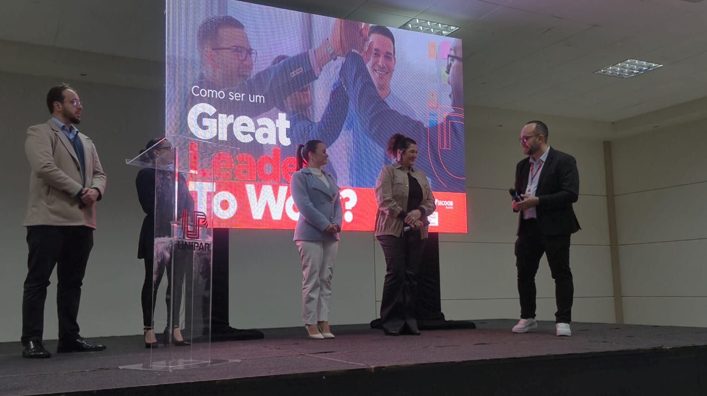
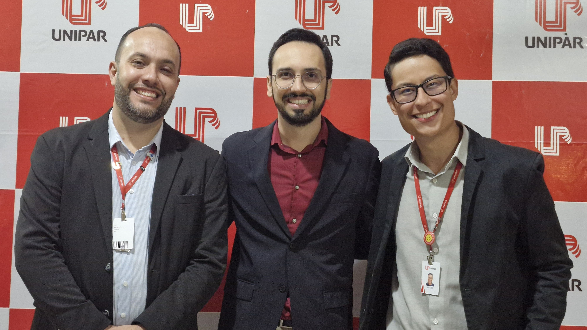
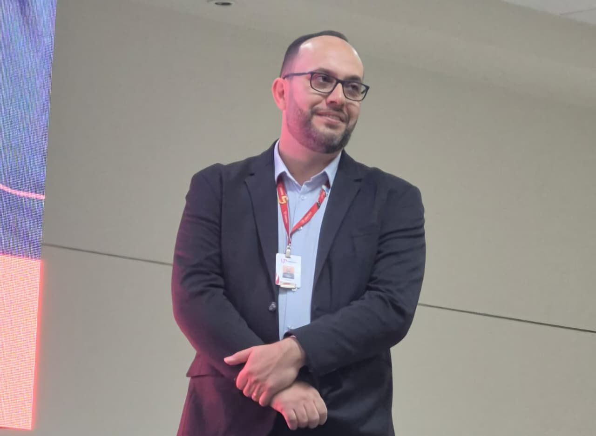
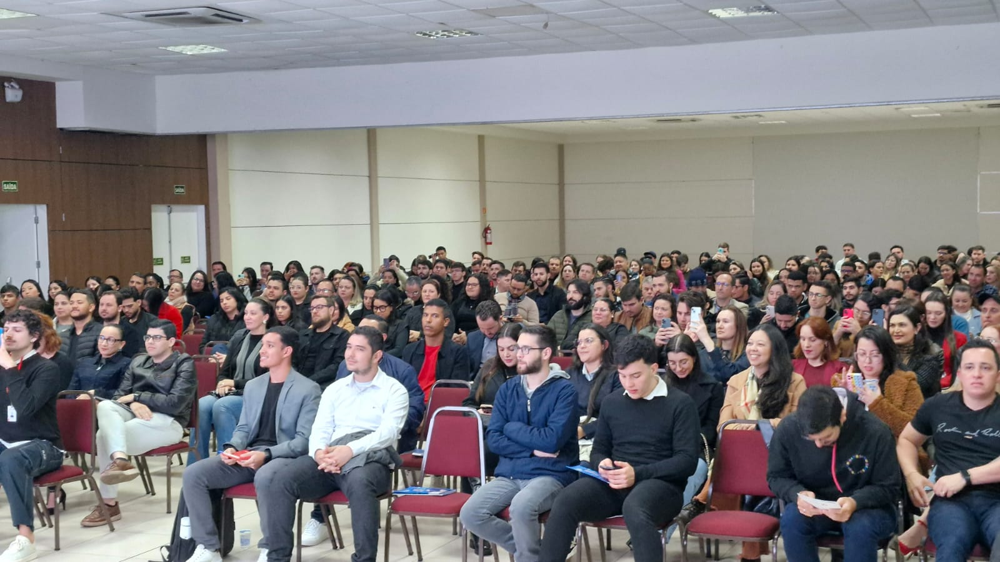
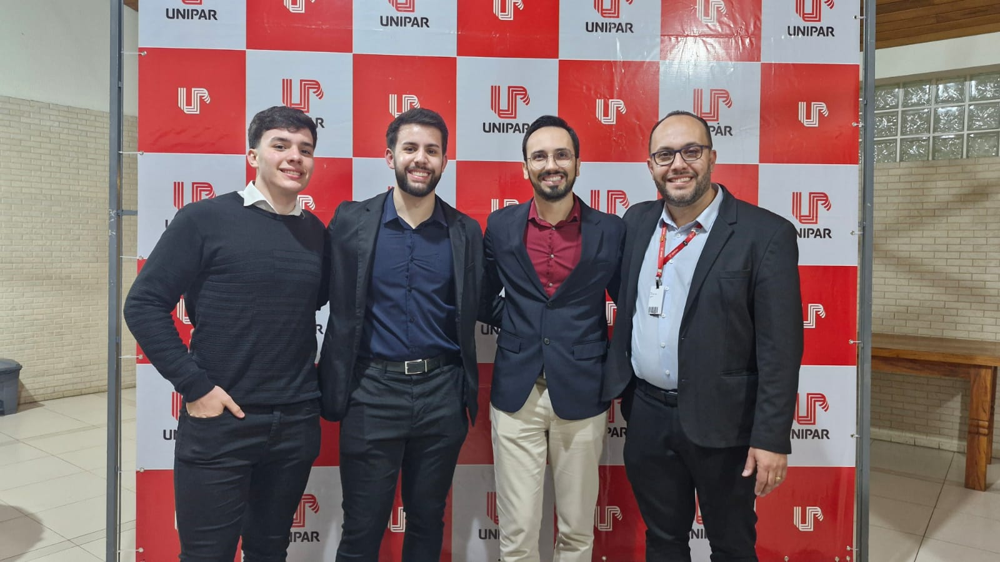
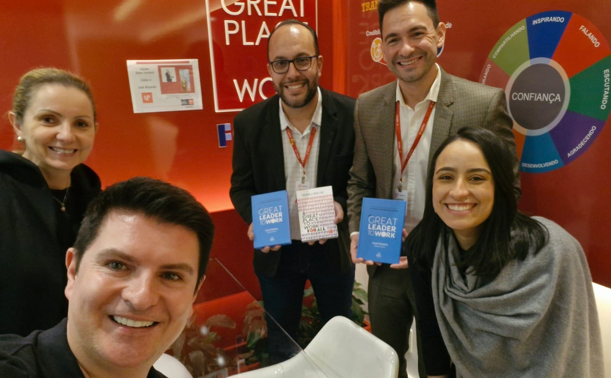
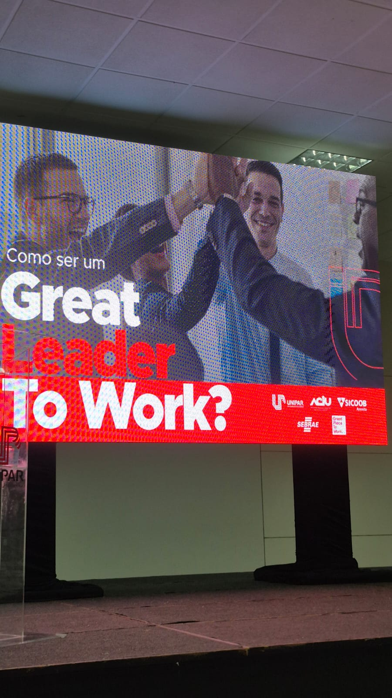

Projetos de Liderança, Cultura e Desenvolvimento
Great Place to Work — GPTW
Projeto desenvolvido pela Unipar In Company em parceria com o Great Place to Work, com iniciativas voltadas ao desenvolvimento de lideranças, gestão de pessoas, cultura organizacional e construção de ambientes de trabalho mais saudáveis, produtivos e preparados para o futuro.

Conhecimento para desenvolver pessoas e transformar ambientes de trabalho
Organizações que desejam alcançar resultados sustentáveis precisam, cada vez mais, investir na formação de líderes capazes de compreender pessoas, fortalecer relações de confiança e construir ambientes favoráveis ao desenvolvimento, ao engajamento e à inovação.
Foi com essa perspectiva que a Unipar In Company aproximou-se do Great Place to Work Brasil, construindo uma parceria voltada à troca de conhecimentos, desenvolvimento profissional e discussão de temas relacionados à liderança, gestão de pessoas e cultura organizacional.
A parceria conecta a experiência educacional da Unipar ao conhecimento do GPTW sobre ambientes de trabalho, liderança e desenvolvimento de culturas organizacionais, criando oportunidades de aprendizagem para profissionais, executivos e gestores.
O papel do líder na construção de grandes ambientes de trabalho
Entre as iniciativas realizadas está a palestra “Como ser um Great Leader to Work – Grande Líder no Ambiente de Trabalho”, realizada em Umuarama e conduzida por Cauê Oliveira, sócio-diretor da Great People Leadership.
O encontro reuniu executivos e profissionais interessados em compreender como a liderança pode contribuir para a construção de equipes mais engajadas, produtivas e inovadoras.
A atividade colocou em evidência a importância da confiança nas relações entre líderes e equipes, mostrando como ambientes de trabalho baseados em respeito, desenvolvimento e bem-estar podem favorecer melhores resultados.
Nesse contexto, liderar vai além de ocupar uma posição de gestão. Significa desenvolver pessoas, estimular o protagonismo, fortalecer vínculos e criar condições para que cada profissional possa contribuir com seu potencial.

Pessoas no centro da estratégia organizacional
As iniciativas desenvolvidas em parceria com o GPTW também ampliam a discussão sobre gestão de pessoas, bem-estar, qualidade de vida, desenvolvimento profissional e engajamento.
Em um mercado de trabalho em constante transformação, organizações precisam compreender que seus resultados estão diretamente relacionados à maneira como as pessoas são lideradas, valorizadas e desenvolvidas.
A educação corporativa contribui justamente para essa transformação, proporcionando aos profissionais novas perspectivas sobre liderança, comportamento, cultura e relacionamento no ambiente de trabalho.
Mais do que desenvolver competências técnicas, a proposta é contribuir para a formação de profissionais capazes de compreender o impacto de suas atitudes na construção de organizações melhores.

Conhecimento conectado à realidade das organizações
As ações realizadas pela Unipar In Company em parceria com o GPTW aproximam conhecimento, experiência de mercado e situações presentes no cotidiano das organizações.
Palestras, encontros, reuniões e treinamentos criam espaços para reflexão e troca de experiências sobre desafios relacionados à liderança, cultura, confiança, engajamento e desempenho.
A aproximação com profissionais e especialistas do Great Place to Work permite ampliar a visão dos participantes sobre os fatores que contribuem para a construção de ambientes de trabalho mais positivos e produtivos.
Dessa forma, o conhecimento não permanece apenas no campo teórico. Ele estimula novas reflexões e possibilidades de aplicação na realidade profissional.

Desenvolvendo líderes preparados para novos desafios
Como parte das iniciativas desenvolvidas, também foi realizado o treinamento “Liderança Inspiradora”, voltado para líderes, empresários e colaboradores.
A formação abordou estratégias relacionadas ao fortalecimento dos vínculos de confiança com as equipes e ao desenvolvimento de uma gestão mais humana, eficaz e orientada a resultados.
A proposta reforça a necessidade de preparar líderes capazes de compreender diferentes pessoas e contextos, estimular o desenvolvimento das equipes e criar ambientes nos quais os profissionais tenham espaço para participar, contribuir e evoluir.

Cultura organizacional e ambientes de trabalho
A parceria também proporcionou momentos de aproximação direta com profissionais do Great Place to Work Brasil.
Em uma dessas iniciativas, representantes da Unipar In Company estiveram no escritório do GPTW Brasil em Curitiba, onde foram recebidos por Rodrigo Giovani, Lilian Carla e Débora Ramos.
O encontro possibilitou a troca de ideias, a construção de projetos e o debate sobre temas relacionados à formação profissional e ao desenvolvimento humano, fortalecendo a aproximação entre as instituições.
Também se destaca a contribuição de Hilgo Gonçalves, reconhecido como um dos grandes idealistas e entusiastas da atuação do GPTW no Paraná.
Essa conexão amplia as possibilidades de desenvolver iniciativas alinhadas aos desafios contemporâneos da gestão de pessoas e da construção de ambientes organizacionais cada vez melhores.

Uma parceria que conecta conhecimento, liderança e organizações
A parceria entre Unipar In Company e Great Place to Work representa a união entre educação, experiência de mercado e desenvolvimento humano.
A Unipar In Company contribui com sua estrutura educacional, professores e experiência na criação de programas de formação e desenvolvimento profissional.
O GPTW agrega sua experiência relacionada à cultura organizacional, liderança e construção de ambientes de trabalho.
Essa aproximação possibilita criar espaços de aprendizagem e reflexão conectados às necessidades das organizações e aos desafios enfrentados por seus profissionais.
O resultado é uma experiência que coloca pessoas, liderança, cultura e desenvolvimento no centro da discussão sobre o futuro das organizações.

Conhecimento para transformar a cultura
O trabalho desenvolvido nessa parceria reforça o papel da educação corporativa como instrumento de transformação.
Ao promover palestras, treinamentos, encontros e projetos relacionados à liderança e à gestão de pessoas, a Unipar In Company contribui para que profissionais possam ampliar seus conhecimentos e repensar suas práticas.
A educação corporativa passa, assim, a cumprir uma função estratégica: desenvolver pessoas para transformar organizações.
Quando conhecimento, experiência e propósito se encontram, novas possibilidades surgem para construir ambientes mais humanos, colaborativos, produtivos e inovadores.

Grandes ambientes de trabalho construídos todos os dias
Grandes ambientes de trabalho são construídos diariamente por meio de liderança, confiança, cultura, desenvolvimento e valorização das pessoas.
A experiência construída entre a Unipar In Company e o Great Place to Work demonstra a importância de aproximar conhecimento e prática para estimular profissionais e organizações a refletirem sobre suas formas de liderar e desenvolver pessoas.
Mais do que discutir modelos de gestão, a parceria busca contribuir para uma mudança de perspectiva: organizações melhores são construídas quando as pessoas são colocadas no centro das decisões e quando a liderança assume seu papel no desenvolvimento de uma cultura positiva.
Projetos de Liderança, Cultura e Desenvolvimento. Conhecimento para formar líderes e transformar ambientes de trabalho.
Great Place to Work + Unipar In Company. Uma parceria pela liderança, pelo desenvolvimento de pessoas e por organizações cada vez melhores.
Unipar In Company — Educação que transforma conhecimento em evolução.